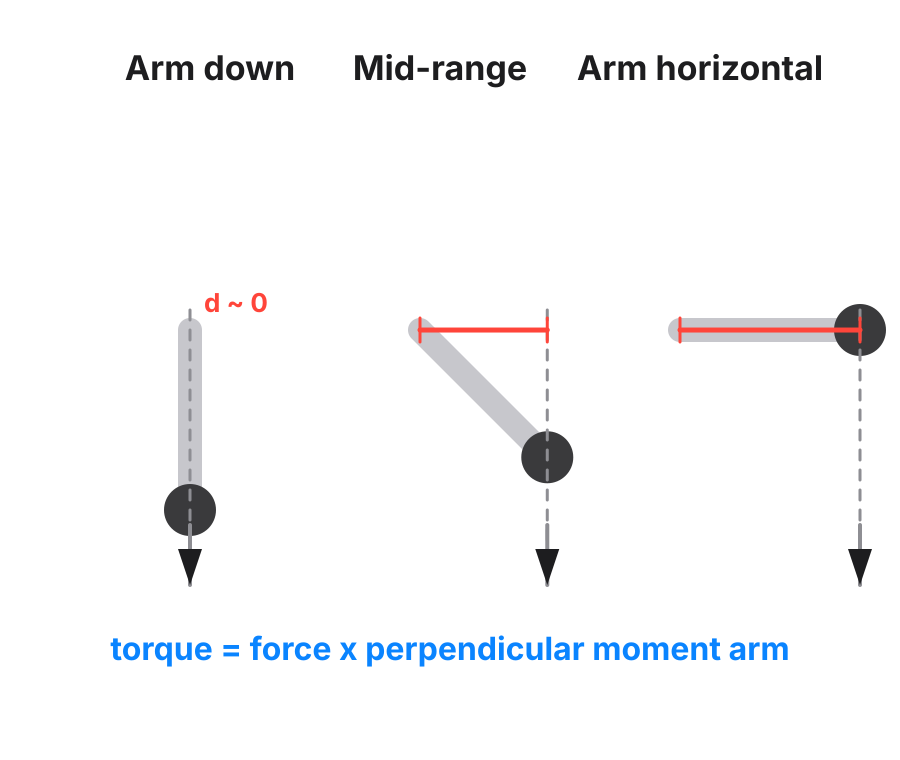

A movement is hard where the load produces the most turning force at the joint. Not where the muscle is stretched, and not where it burns. That turning force is torque, and torque is force times moment arm.
A joint rotates because forces create a turning effect around it. The same thing happens when you push a door: pushing at the handle turns it more easily than pushing near the hinge. The perpendicular distance between the joint and the line the load pulls along is the moment arm (moment arm). The turning effect produced is torque (torque): the force, multiplied by its moment arm. The same is true of a muscle pulling on a bone, not only a load pulling on a limb.
Torque = force × moment arm

The moment arm changes as the joint moves. So the same weight produces a different torque at each point in the range. Take a dumbbell lateral raise. Near the bottom, the dumbbell hangs almost straight down from the shoulder. Its moment arm is short, so the torque it produces is small: it feels like nothing.
Level with the shoulder, the moment arm is at its longest, so the same weight produces the most torque: it feels heavy. The weight never changed. The moment arm did, and with it the torque.
title: The dumbbell lateral raise
note: The load's moment arm at the shoulder grows as the arm comes up
from: Arm at her side
to: Arm level with her shoulder
mark: 100
label: Hardest
What it means for coaching. When a client says an exercise is "hard at the bottom", ask where the load pulls against the joint. That is a geometry question, and you can talk her through it. It decides where a pause goes and which version of a movement loads the muscle she wants.
Treating "hard" and "stretched" as the same word. They coincide on some movements and come apart on others. The movements where they come apart are where every argument happens.
The weight isn't heavier at the top. It's further from the joint, so your shoulder has to work harder to hold it there.
torque: The turning force on a joint. The further the load sits from the joint, the more of it there is. It is the force times its moment arm, so the same force can produce very different torque at different joint angles.
moment arm: The perpendicular distance between the joint axis and the line of force. In simple terms, it is how far the force acts from the joint, in the direction that creates rotation.